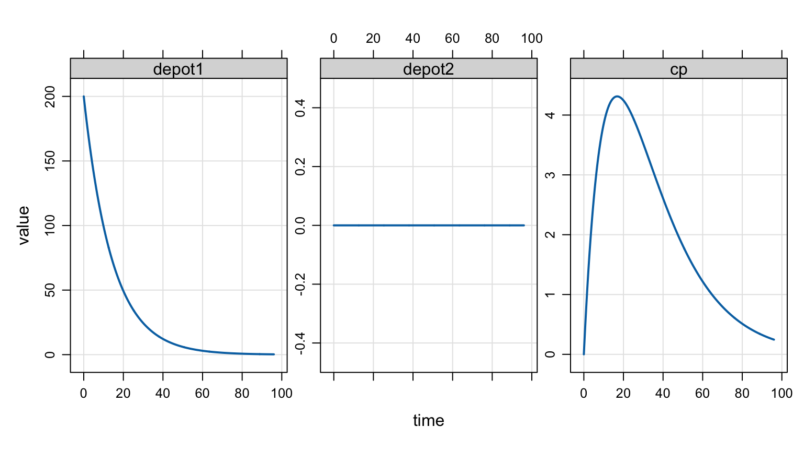

A user asked this question via email (condensed and lightly edited):
I’m working on a model for a drug that has diastereomers which are tracked separately and I’m struggling to find a way to allow the dosing to automatically split into two compartments without some massive manual overwriting in the model file.
As a simple example, let’s assume I’m giving a 200 mg dose of a 50/50 diastereomer drug. I’d like to code the dose event as amt = 200 and to cmt = 1, then I’d like the model file to split that dose such that 50% goes to DEPOT1 and 50% goes to DEPOT2.
Do you have any ideas for how to do this? Thanks in advance!
This is a common trick for modeling absorption. Even when you aren’t dealing with diastereomers, sometimes you want to split a dose into fast and slow absorption components, or maybe part of a dose is absorbed through a first-order process and part through a zero-order process.
When doing this through an NMTRAN-style data set, you usually have to include the full dose on two adjacent records with the identical time, then estimate the fraction of the dose getting absorbed through each pathway through the bioavailability parameter (e.g., F1).
In this blog post, I’ll show you how to accomplish this using the evtools plugin and just a single dose record in the data set.
2 The starting model
Let’s start by coding up a basic PK model with two depot compartments as in the original request.
We can simulate the 200 mg dose, putting all of it into depot1 like this:
mod <-mread_cache("split-dose-1.mod", end =96, delta =0.1)dose <-ev(amt =200, cmt =1)out <-mrgsim(mod, dose, recsort =3) plot(out, "depot1, depot2, cp")

Ok, we see that all 200 mg went into the first compartment (depot1). Let’s modify this to accomplish the dose split.
3 Split the dose with evtools
Now, we’ll update this model to split the 200 mg dose 50/50 between the two depot compartments. Recall, that we can reduce any dose by setting the bioavailability parameter (F1 for compartment 1) to 0.5
$pkF1 =0.5;
Now, we will add some code using evtools to “clone” any dose into depot1 that comes along and create a new dose into depot2 with half the dose.
mod <-mread_cache("split-dose-2.mod", end =96, delta =0.1)out <-mrgsim(mod, dose, recsort =3) plot(out, "depot1, depot2, cp")
Now we see 100 mg going into depot1 with slow exit and 100 mg going into depot2 with faster exit. The way I’ve set up the example, the concentration increases much more quickly after adding the fast absorption through depot2 in combination with the slower absorption via depot1. I don’t know the specifics about the diastereomers from the original question, but we can see that this code splits the dose in two compartments as requested.
4 Another example
Here’s another example where we have fast first order input in combination with slower zero-/first-order input.